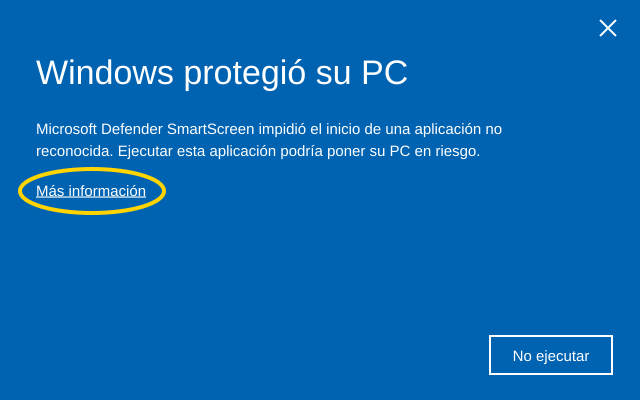
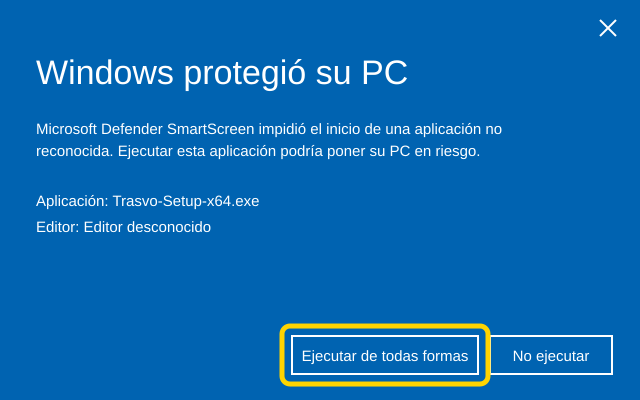
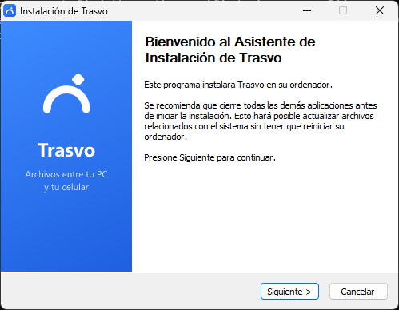
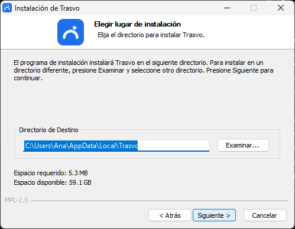
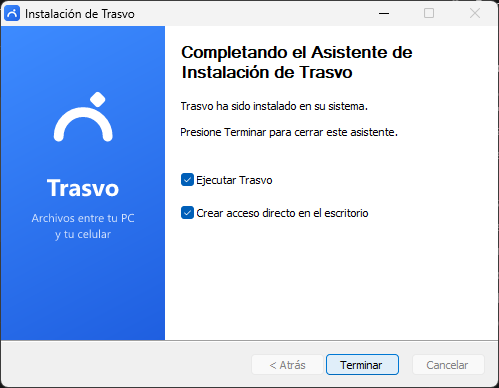
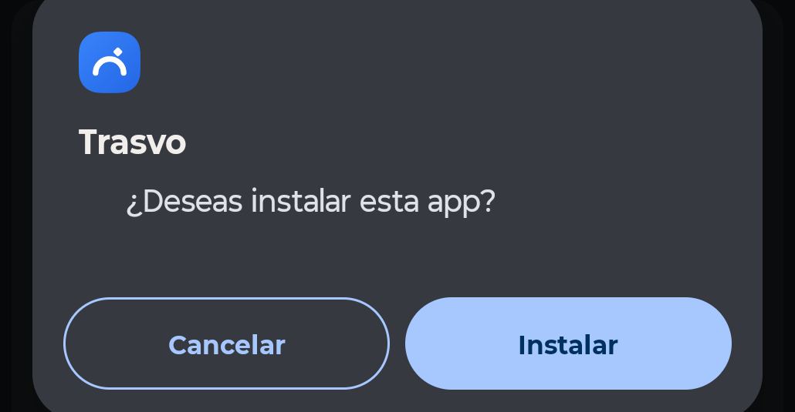
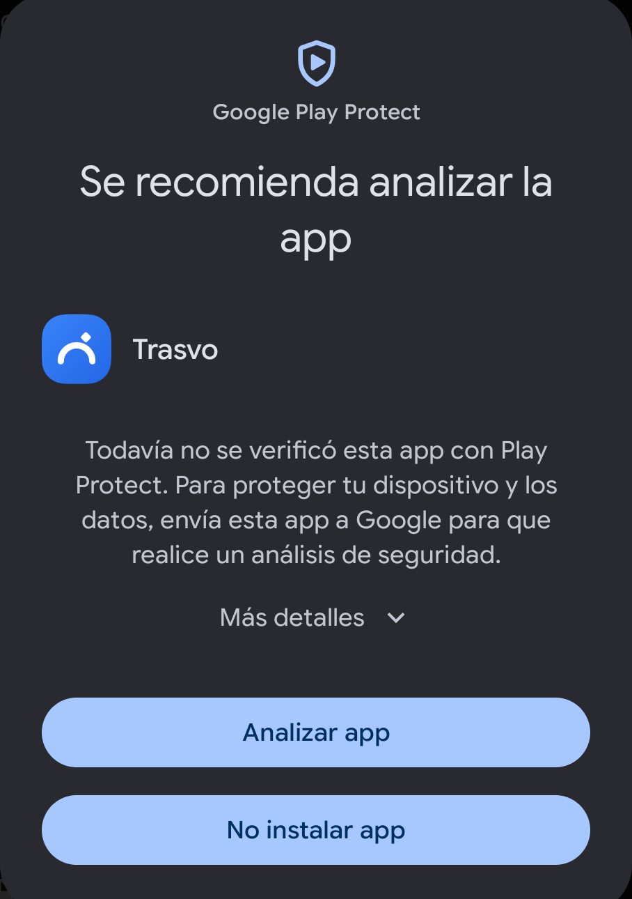
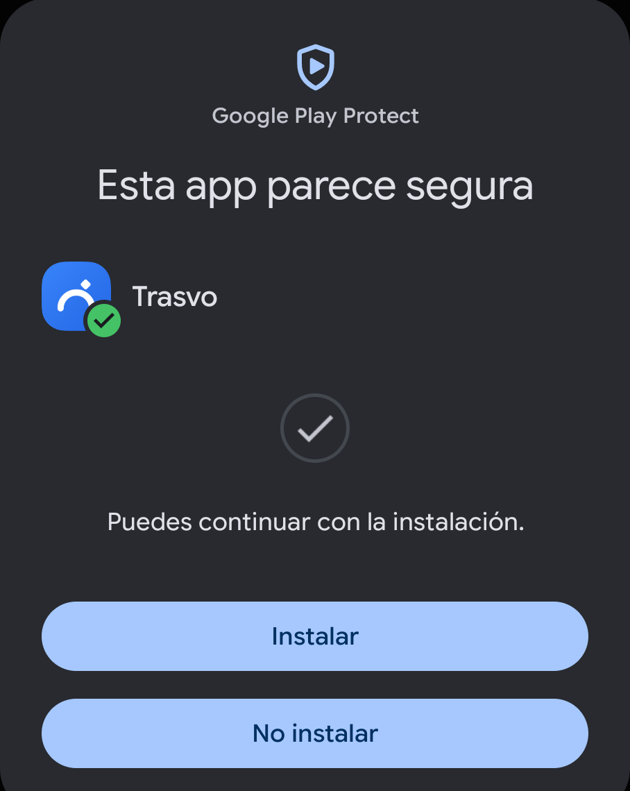
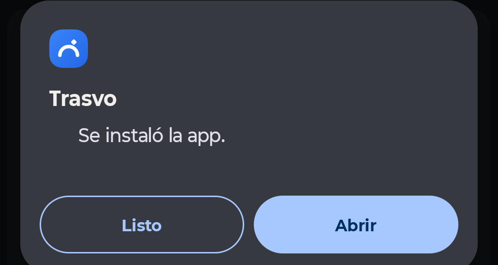

Descargas
Versión 0.1.0. Las dos descargas salen de la página de versiones del proyecto en GitHub.
Para la PC
Descargar Trasvo-Setup-x64.exeSHA-256: 8dc4508a5d2d8bcdab5337a2f985d1887787d4f1811374c85a390ff46d1fcce2 ·
Para el celular
Descargar Trasvo.apkSHA-256: f9d819d63ec4f4edb0e1b296ace6da9d8d90007db3d6660dc8955eccf47ca06b ·
En la PC (Windows)
-
Abre el instalador
Abre Trasvo-Setup-x64.exe desde tu carpeta Descargas (o desde la barra de descargas del navegador).
-
«Windows protegió su PC»: toca «Más información»
Es el aviso de Microsoft Defender SmartScreen. Aparece con cualquier programa nuevo que no tiene firma digital paga. Al principio solo se ve el botón «No ejecutar»: toca el enlace Más información.

Ilustración. El texto puede decir «su PC» o «tu PC» según tu Windows. -
Toca «Ejecutar de todas formas»
Ahora aparece el nombre del archivo y «Editor desconocido», que quiere decir que no tiene firma. Toca Ejecutar de todas formas.

Ilustración del segundo paso del aviso. En algunas PCs, en lugar de este aviso azul aparece una ventana gris, «Abrir archivo - Advertencia de seguridad», que dice que no se pudo comprobar el editor. Ahí toca Ejecutar. Si no aparece ningún aviso, sigue con el paso siguiente.
-
Instala: Siguiente, Siguiente, Terminar
Se abre el instalador de Trasvo. No hace falta cambiar nada: se instala solo para tu usuario, en tu carpeta de programas.

Bienvenida: toca Siguiente. 
Carpeta de instalación: déjala como está y toca Siguiente. 
Deja marcado Ejecutar Trasvo y toca Terminar. -
Si aparece el Firewall, permite «Redes privadas»
La primera vez que se abre Trasvo, Windows puede preguntar si la dejas usar la red. Deja marcado Redes privadas y toca Permitir. Sin ese permiso el celular no puede encontrar la PC. No marques «Redes públicas».
En el celular (Android)
-
Descarga el APK
Desde el celular, abre esta página y toca Descargar Trasvo.apk, o escanea el código QR de arriba desde la PC. Si Chrome pregunta si quieres descargar el archivo igual, toca Descargar.
-
Ábrelo y permite instalar desde esa app
Toca la notificación de descarga, o abre Descargas y toca Trasvo.apk. La primera vez Android dice que por seguridad no puede instalar apps desconocidas de esa fuente: toca Configuración, activa Permitir de esta fuente y vuelve atrás.
Ese permiso es para Chrome (o la app con la que abriste el archivo). Puedes desactivarlo después de instalar.
-
Toca «Instalar»

Captura real, Android 16. -
Play Protect: deja que la analice
Google Play Protect avisa que todavía no conoce la app y recomienda analizarla. Toca Analizar app: Google revisa el archivo y en unos segundos te dice si puedes seguir. Cuando diga «Esta app parece segura», toca Instalar.

Toca Analizar app. 
Después, Instalar. Si en tu celular el aviso es distinto y no ofrece analizar, busca Más detalles y luego Instalar de todas formas.
-
Listo: toca «Abrir»

Trasvo queda en tu lista de apps. Con las dos instaladas, sigue en Conectar la PC y el celular.
Comprobar que el archivo es el original
Cada descarga tiene una huella SHA-256: un código que cambia por completo si el archivo se modifica, aunque sea un byte. Si la huella de tu archivo coincide con la publicada aquí y en la página de versiones, es el mismo archivo que publicamos.
En Windows, abre PowerShell y escribe:
Get-FileHash $env:USERPROFILE\Downloads\Trasvo-Setup-x64.exe
Compara el resultado con la huella de Descargas. Si quieres una segunda opinión, puedes subir el archivo a VirusTotal, que lo revisa con decenas de antivirus.
Desinstalar
- Windows: Configuración → Aplicaciones → Aplicaciones instaladas → Trasvo → Desinstalar. Tus archivos recibidos se quedan donde estaban.
- Android: mantén presionado el ícono de Trasvo → Desinstalar. Lo recibido sigue en
Descargas/Trasvo.
¿Algo no salió como aquí? Escríbeme a trasvoapp@gmail.com o abre un reporte en GitHub.